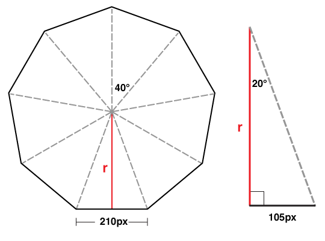
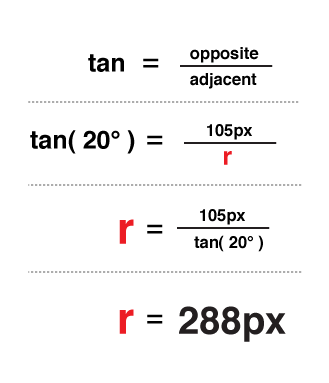

Carousel
Front-end developers have a myriad of choices when it comes to content carousels. Now that we have 3D capabilities in our browsers, why not give a shot at creating an actual 3D carousel?
The markup for this demo takes the same form as the box, cube, and card. Let’s make it interesting and have a carousel with 9 panels.
<section class="container">
<div id="carousel">
<figure>1</figure>
<figure>2</figure>
<figure>3</figure>
<figure>4</figure>
<figure>5</figure>
<figure>6</figure>
<figure>7</figure>
<figure>8</figure>
<figure>9</figure>
</div>
</section>
Now apply basic layout styles. Let’s give each panel of the #carousel 20px gaps between one another, done here with left: 10px; and top: 10px;. The effective width of each panel remains 210px.
.container {
width: 210px;
height: 140px;
position: relative;
-webkit-perspective: 1000;
}
#carousel {
width: 100%;
height: 100%;
position: absolute;
-webkit-transform-style: preserve-3d;
}
#carousel figure {
display: block;
position: absolute;
width: 186px;
height: 116px;
left: 10px;
top: 10px;
border: 2px solid black;
}
Next up: rotating the faces. This #carousel has 9 panels. If each panel gets an equal distribution on the carousel, each panel would be rotated 40 degrees from the next ( 360 / 9 ).
#carousel figure:nth-child(1) { -webkit-transform: rotateY( 0deg ); }
#carousel figure:nth-child(2) { -webkit-transform: rotateY( 40deg ); }
#carousel figure:nth-child(3) { -webkit-transform: rotateY( 80deg ); }
#carousel figure:nth-child(4) { -webkit-transform: rotateY( 120deg ); }
#carousel figure:nth-child(5) { -webkit-transform: rotateY( 160deg ); }
#carousel figure:nth-child(6) { -webkit-transform: rotateY( 200deg ); }
#carousel figure:nth-child(7) { -webkit-transform: rotateY( 240deg ); }
#carousel figure:nth-child(8) { -webkit-transform: rotateY( 280deg ); }
#carousel figure:nth-child(9) { -webkit-transform: rotateY( 320deg ); }
Now the outward shift. Back when we were creating cube and boxes, the translate value was simple to calculate, as it was equal to one half the width, height, or depth of the object. Now with a carousel, there is no size we can immediately reference. We’ll have calculate the distance for the shift by other means.
Drawing out a diagram of the carousel, we see that we only know two things: the width of each panel is 210px and the each panel is rotated 40 degrees from the next. If we split one of these triangles down its center, we get a right triangle, prime for some trigonometry.

We can determine the length of r in this diagram with a basic tangent equation.

There you have it, 288px is the distance to translate the panels out in 3D space.
#carousel figure:nth-child(1) { -webkit-transform: rotateY( 0deg ) translateZ( 288px ); }
#carousel figure:nth-child(2) { -webkit-transform: rotateY( 40deg ) translateZ( 288px ); }
#carousel figure:nth-child(3) { -webkit-transform: rotateY( 80deg ) translateZ( 288px ); }
#carousel figure:nth-child(4) { -webkit-transform: rotateY( 120deg ) translateZ( 288px ); }
#carousel figure:nth-child(5) { -webkit-transform: rotateY( 160deg ) translateZ( 288px ); }
#carousel figure:nth-child(6) { -webkit-transform: rotateY( 200deg ) translateZ( 288px ); }
#carousel figure:nth-child(7) { -webkit-transform: rotateY( 240deg ) translateZ( 288px ); }
#carousel figure:nth-child(8) { -webkit-transform: rotateY( 280deg ) translateZ( 288px ); }
#carousel figure:nth-child(9) { -webkit-transform: rotateY( 320deg ) translateZ( 288px ); }
If we decide on changing the width of the panel or the number of panels, we only need to plug in those two variables into our equation to get the appropriate translateZ value. In JS terms, that equation would be:
var tz = Math.round( ( panelSize / 2 ) /
Math.tan( ( ( Math.PI * 2 ) / numberOfPanels ) / 2 ) );
// or simplified to
var tz = Math.round( ( panelSize / 2 ) /
Math.tan( Math.PI / numberOfPanels ) );
Just like our previous 3D objects, to show any one panel, we need only to apply the reverse transform on the carousel. Here’s the style to show the fifth panel:
-webkit-transform: translateZ( -288px ) rotateY( -160deg );

By now, you probably have two thoughts:
- Re-writing transform styles for each panel looks to be tedious.
- Why bother doing high school math – Aren’t robots supposed to be doing all this work for us?
And you’re absolutely right. The repetitive nature of 3D objects lend themselves to scripting. We can offload all the monotonous transform styles to our dynamic script, which, if done right, will be more flexible than the hard-coded version.